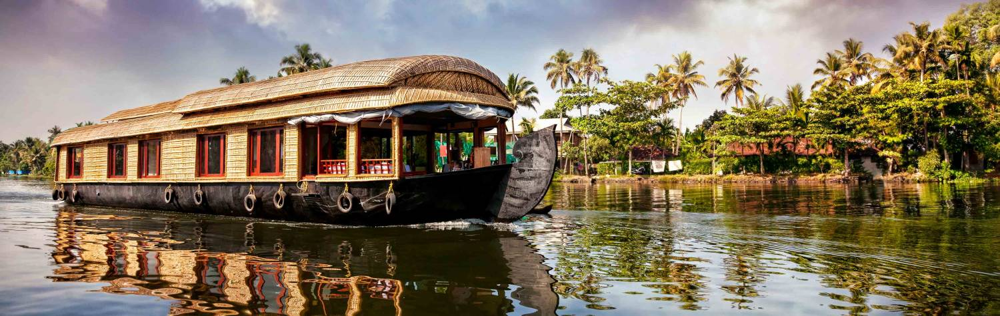

Visit India and you’re catapulted straight into a chameleonic theater of color. Even the glorious
old architecture is vividly draped, from the sun reflecting off the Taj Mahal to the pink regal
city of Jaipur. This is the dazzling backdrop, the delightful exterior that hangs over a population
delighting in bringing vitality and vibrancy to everything. Just being outside is a sensual
banquet; fresh smells float and flicker, merging with sounds of soft temple bells and the shouts
of chai wallahs. Then a painted elephant walks past and a market stall reveals a thousand
flamboyant saris. Trying to describe this experience to friends verges on the impossible:
“well, err, it was, it was so…India!”
India is a huge country, home to over one billion people and 29 individual states, each remarkably
different from the last. It would take years to see it all, and even longer to understand it.
On one hand it remains a poor nation, yet the blossoming economy is helping to power a sophisticated
tourism market. Gone are the days when visiting India meant having to rough it. Five-star hotels
are decorated with inimitable style and panache, a network of tourist-tailored domestic flights
dramatically reduces travel time, and the government is feverishly investing in positioning India
as an upmarket travel destination. Grandeur should be expected, after all, India has been offering
aristocratic opulence since long before the nation was conceived. It’s now safe to shed the old
stereotypes and pamper yourself on this new commitment to luxury.
However, the country’s heart remains indelibly humble, and its soul invariably welcoming.
Wandering the streets reveals one of India’s many faces; every soiree outside is imbued with a
radiant hypnotism. Yet India supplements this omnipresent charm with an outstanding collection
of attractions and paradigms. Spiritual cities submerge you in mesmeric culture, always ensuring
immersive experiences with local people and lifestyles. Richly diverse landscapes provide a
stage to explore, from the Himalayan Mountains to the beaches of Goa, and from the endlessly
green tea plantations to deserts and salt pans crossed by camels. Charming ancient cities cover
the country, each absolutely unique and serving up wondrous temples, shimmering forts, and a
sublime blend of architectural styles. Like Hindu god Brahma, there are so many faces to discover.
Go trekking, ride elephants, practice yoga, watch birds, meet holy babas, track tigers, meditate,
indulge, experience, and jump in to the most enchanting show on our planet. The following is
just a glimpse at the country’s iconicism.
1.The Colored Cities of Rajasthan: Rajasthan revels in its ambiance of ancient glory,
infusing the architectural wonders with endless slices of cultural heritage. Rugged forts and
spectacular palaces grab the attention revealing relics from centuries of warrior narratives and
regal prosperity. Each city has its own style and color; Jaipur is the “Pink City,” Jodhpur the
blue one, Udaipur the “City of Lakes,” and Jaisalmer is the scorched red gateway to the Thar
Desert. Nestled between these iconic destinations are mountain retreats, camel market towns,
elephant tours, dance troupes, and a continual immersion in eminent wonder.
2.India’s Sacred Cities and Spirituality:Temple bells chime and spirituality exudes
from most Indian streets, the engrossing experience elevated in the country’s holy cities along
the River Ganges. Varanasi is the oldest and most riveting, the centerpiece of Hindu culture
where smoke infused ceremonies are performed by babas, and dead bodies are symbolically burnt
at the entrance to the river. It’s India in a nutshell, a labyrinth of enchanting smells, colors,
sounds, and monkeys that swing around the rooftops. Less intense yet equally captivating,
you’ll find a myriad of important Hindu towns along the irrefutable Ganga and further afield.
3.The Taj Mahal and Ancient Agra:Few buildings ignite the imagination like the Taj Mahal,
the white marble mausoleum built by a Mughal emperor for his wife. As the sun crosses the sky
it brings subtle shades and wizardry reflections to the traditional domes; each hour displays another
compelling reason to stay and take more photos. It’s far from the only marvel in Agra,
the historic city packed with resilient forts, charming mosques, and streets that dance with
intrigue.
3.Cruising the Kerala Backwaters:With more canals than Venice and an equally captivating
assortment of local gondoliers, the iridescent Kerala backwaters provide one of India’s most
tranquil excursions. Live aboard house boats, cruise past tiny villages and buffalo ploughed
rice paddies; the serene waterways are a million miles from the experience in the rest of India.
Alight and explore a lost temple, then jump back aboard for a sumptuous buffet beneath the stars.
